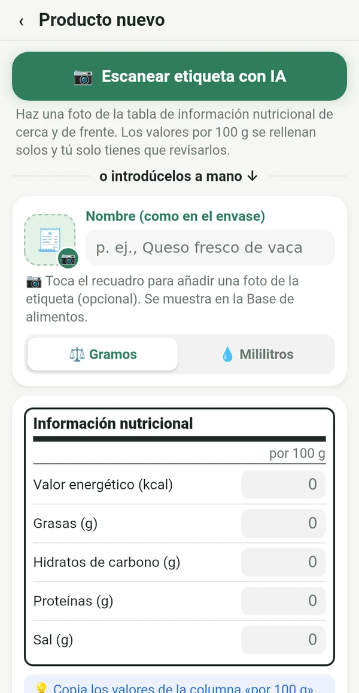
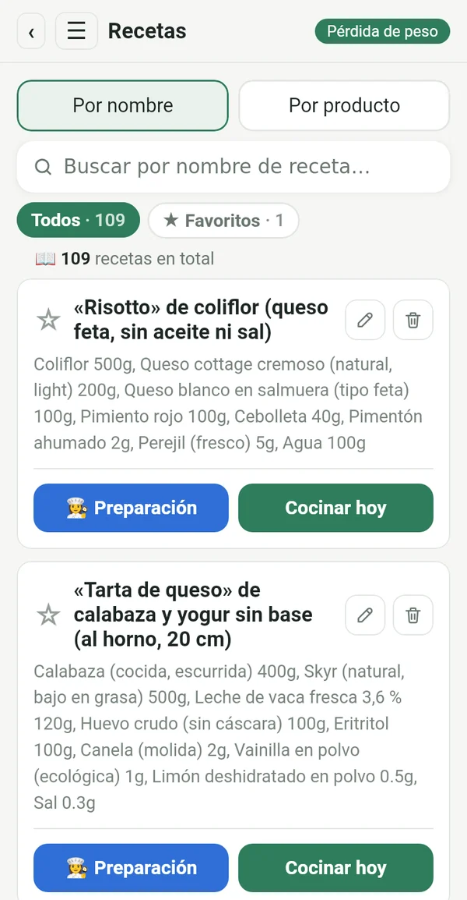
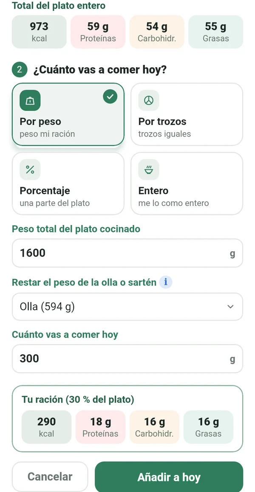
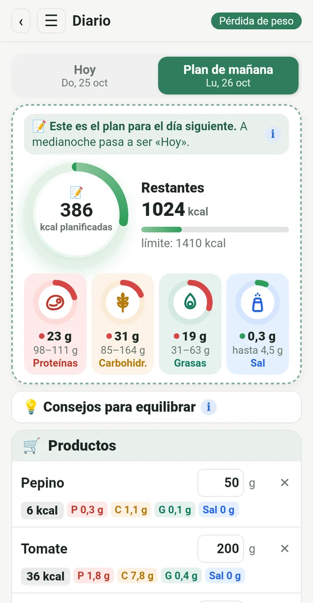
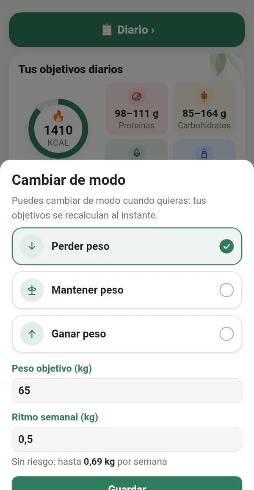
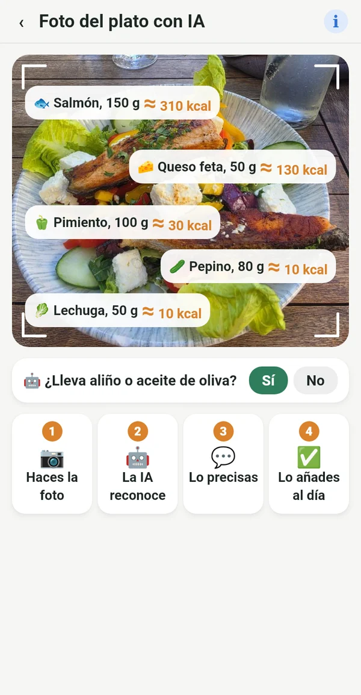

Todo lo que necesitas, nada que sobre

De la etiqueta, no de bases ajenas
Copias los valores por 100 g del envase o simplemente haces una foto a la etiqueta. Los números coinciden con lo que comes de verdad.
📷 Una foto de la etiqueta con IA rellena los campos por ti
Tu recetario digital
Las recetas del cuaderno de la abuela, de los libros de cocina de la estantería y de tus grupos favoritos, todas en un mismo sitio. Las introduces una vez y las usas siempre.

Tu ración exacta de toda la olla
Pesas el plato terminado junto con la olla. Macrolia resta la olla y calcula exactamente cuánto has comido.

Planificas, compras, comes
Ya hoy apuntas lo que comerás mañana. Compras solo lo necesario y a medianoche el plan se convierte en tu día.

Perder, mantener o ganar peso
Cuando llegas a tu objetivo, pasas a «Mantener peso». Si la vida cambia, simplemente cambias el modo. Tu límite diario sigue la ecuación de Mifflin-St Jeor y las recomendaciones clínicas, a un ritmo seguro.

También fuera sabes lo que comes
Haces una foto al plato y la IA reconoce lo que hay en él. El valor es aproximado y está marcado con ≈. Mejor aproximado que nada.
Calorías de la actividad
Con Health Connect, desde el móvil, un reloj o una app de fitness. Tú eliges cuánto se suma a tu límite.
Peso, gráfica, informe
Gráfica del peso, fotos de antes y después solo para ti, e informe en PDF y Excel.
Consejos de equilibrio
Avisos breves cuando la proteína o la grasa se salen del objetivo. Ayuda, no manda.
Para todas las que quieren mantener el rumbo
El yoyó no viene de la dieta. Viene cuando lo dejas.
Después del bebé, vuelves a tu rutina.
La edad no es motivo para rendirse.
También en el restaurante sabes qué pedir.
Quien sigue el plan al pie de la letra, obtiene un resultado exacto.
Tus datos son solo tuyos
Todo se queda en tu móvil. Sin registro, sin anuncios ni rastreo. La foto para el análisis con IA se envía solo para el cálculo y no se guarda.
Suscripción
Suscripción mensual o anual, ambas con 7 días gratis. Cancela cuando quieras en Google Play.
En 14 idiomas, con tema claro y oscuro.
Preguntas
¿Cuándo sale la app?
Estamos preparando el lanzamiento en Google Play. Escríbenos y te avisaremos cuando esté lista.
¿Hay versión para iPhone?
Por ahora solo para Android. La versión para iPhone está prevista más adelante.
¿Por qué no hay escáner de código de barras?
Las bases de códigos de barras las rellenan los usuarios y a menudo tienen errores o están desactualizadas. En Macrolia cada valor viene de la etiqueta, por eso los números son exactos.
¿Cuántas fotos con IA puedo hacer?
Hasta 100 fotos al mes, entre etiquetas y platos.